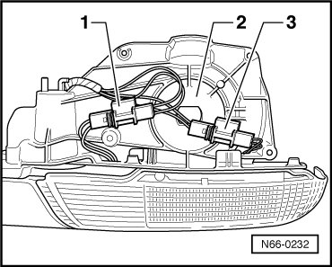
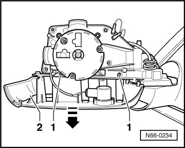
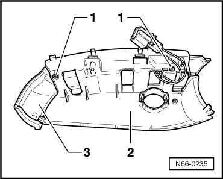

Exterior Mirror, Through 10.2006
Exterior Mirror, through 10.2006
Side Turn Signal
Removing
• LEDs with a long service life are installed in the side turn signals instead of standard bulbs.
• Because of that, it is not necessary to replace bulbs. If there is damage, the entire turn signal assembly must be replaced.
- Mirror Glass, Removing, refer to --> Mirror Glass
- Remove mirror housing, refer to --> Mirror Housing
- Remove entry light, refer to --> Entry Light
- Disengage and separate the connection - 1 - and - 3 - on the backside of the mirror base plate - 2 -.

- Remove bolts - 1 - (quantity: 2) on front of mirror base plate.

- Remove assembly component - 2 - downward - arrow - from mirror base plate.
- Remove the two screws - 1 - and remove the assembly piece - 2 - from the side turn signal - 3 -.

Installing
To install, perform the steps used for removal in reverse order.